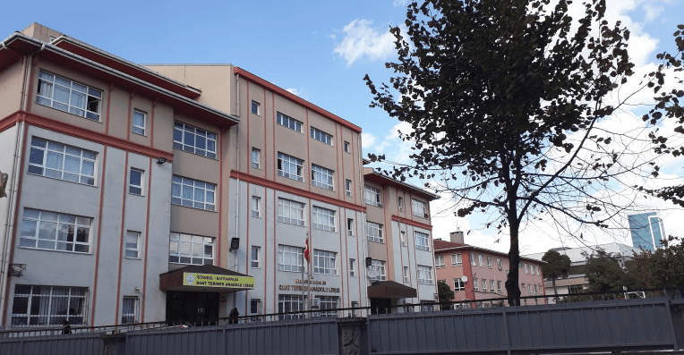

Merhaba:
Ben Osman Pampal. Sakarya Üniversitesi 1. sınıf bilgisayar mühendisliği öğrencisiyim.
Burası benim WEB Sitem. Burada kendimi anlatacağım.
Eğitim bilgilerimi, geçmişimi ve gelecekle ilgili bazı düşüncelerimi anlatacağım.
18 Ağustos 2001'de İstanbul Fatih'de doğdum. Aslen Giresunluyum. 6 yaşımda Atatürk Çiftliği Okulu'na başladım. 8. sınıfta okulumu 13. bitirerek Suat Terimer Anadolu Lisesi'ne gittim. Lise hayatım çok da parlak geçmese de burada çok iyi insanlarla tanıştım. Son sene üniversite sınavına hazırlandım. Hedefim diş hekimliğiydi fakat puanım yetmedi. Biraz araştırınca bilgisayar mühendisliği okumays karar verdim.
Şimdi daha karar vermedim ama kafamda birkaç yol var: Siber güvenlik konusunu araştırıyorum, Bu devirde öenmli bir meslek. Yapay zeka alanına geçebilirim. Tabi bunun için öncelikle Python dilini öğrenmeliyim. Ya da WEB developer olabilirim. İlerleyen zamanda bakacağım.
|  |

|